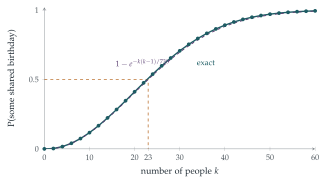

STEP II 2007, Question 13
Read the question before you go on. It is in the STEP Support Programme’s question database: step.maths.org/questions/07-s2-q13
The hook
How many people do you need in a room for it to be more likely than not that two of them share a birthday? Most people guess somewhere around \(180\), half of \(365\). The answer is \(23\). In a class of thirty there is a \(70\%\) chance of a shared birthday; at a party of fifty, \(97\%\).
The surprise comes from confusing two different questions: “does someone share my birthday?” (which does need about \(253\) people) and “do any two people share a birthday?”. With \(23\) people there are \(\binom{23}{2} = 253\) pairs, and each pair is a chance for a match. This question makes that intuition precise, and the same mathematics decides how secure the cryptography protecting your bank account is.
Before you start
Why is it easier to calculate the probability that no two guests share a birthday? Line the guests up: what is the chance that the second avoids the first’s birthday? That the third avoids both?
“At least two share” covers many overlapping cases (two share, three share, two different pairs, …). Its complement, “all different”, is a single clean event. The second guest avoids the first’s birthday with probability \(\frac{364}{365}\); given that, the third avoids both with probability \(\frac{363}{365}\); and so on.
Working it through
Stage 1 A useful approximation
What is the tangent line to \(y = e^{-x}\) at \(x = 0\)?
Since \(e^{-x} = 1 - x + \frac{x^2}{2} - \cdots\), for small \(x\) we have \(e^{-x} \approx 1 - x\). With \(x = r/n\), \[\frac{n - r}{n} = 1 - \frac{r}{n} \approx e^{-r/n}. \qed\] The error is about \(\frac{r^2}{2n^2}\), small when \(r\) is much smaller than \(n\).
Stage 2 The probability of a shared birthday
The probability that all \(k\) birthdays are different is \[\frac{365}{365}\cdot\frac{364}{365}\cdot\frac{363}{365}\cdots\frac{365 - (k - 1)}{365} = \prod_{r=0}^{k-1}\frac{365 - r}{365}.\] Using the approximation on each factor, and the fact that exponentials multiply by adding their exponents, \[\prod_{r=0}^{k-1}e^{-r/365} = \exp\Bigl(-\frac{0 + 1 + \cdots + (k - 1)}{365}\Bigr) = \exp\Bigl(-\frac{k(k - 1)}{730}\Bigr).\] So the probability of at least one shared birthday is approximately \(1 - e^{-k(k-1)/730}\).■
Look at the exponent: \(\frac{k(k-1)}{730} = \binom{k}{2}\Big/365\). What does that say in words?
It is the number of pairs of guests, times the probability \(\frac{1}{365}\) that a given pair shares a birthday: the expected number of shared pairs. The approximation says the chance of no match is \(e^{-(\text{expected number of matches})}\), a hint of the Poisson distribution again, as in Section 9.8.
Stage 3 Twenty-three
We need \(1 - e^{-k(k-1)/730} \geq \frac12\), that is \(e^{-k(k-1)/730} \leq \frac12\), or \[\frac{k(k - 1)}{730} \geq \ln 2 \approx \frac{253}{365}, \qquad\text{that is}\qquad k(k - 1) \geq 506.\] Since \(22 \times 21 = 462\) and \(23 \times 22 = 506\), the smallest value is \(k = 23\).■
(The exact probability for \(23\) guests is \(0.507\), and for \(22\) guests \(0.476\), so the approximation gives the right answer.)
Stage 4 Sharing with the host
For each guest, what is the probability of not sharing the host’s birthday? Are the guests independent of each other in this respect?
Each guest independently misses the host’s birthday with probability \(\frac{364}{365} \approx e^{-1/365}\). So the probability that none of \(k\) guests shares it is \(\bigl(\frac{364}{365}\bigr)^k \approx e^{-k/365}\), and we need \[e^{-k/365} \leq \tfrac12, \qquad\text{that is}\qquad k \geq 365\ln 2 \approx 253.\] So there must be \(253\) guests.■
The contrast is the whole point: \(253\) guests to match one particular person, but only \(23\) for some pair to match, because \(23\) people make \(253\) pairs.

Looking back
Use the complement. “All different” was a single product; “at least one match” was a mess.
Linearise, then exponentiate. Replacing each factor \(1 - x\) by \(e^{-x}\) turned a product into a sum.
Count pairs. The exponent was the number of pairs times the chance that a pair matches. The square in \(k(k-1)\) is the whole explanation of the paradox.
What’s really going on
The square-root law
With \(n\) equally likely days instead of \(365\), the same argument gives \[\mathrm{P}(\text{some match among } k) \approx 1 - e^{-k^2/(2n)},\] so matches become likely once \(k\) is around \(\sqrt{n}\), not \(n\). More precisely, the probability reaches \(\frac12\) at \(k \approx 1.18\sqrt{n}\), and the expected number of people you need to meet before the first repeat is about \(\sqrt{\pi n/2}\) (for \(n = 365\), about \(24.6\)). This square-root law is the reason coincidences are so common: in any large collection of events, some pair is likely to match in some way, even though any particular match is unlikely.
Birthday attacks
Computers check that a file has not been tampered with by computing a hash: a fingerprint of, say, \(n = 2^{128}\) possible values. A forger who wants two documents with the same hash (a harmless contract and a fraudulent one) does not need to try \(2^{128}\) documents. By the birthday argument, generating about \(\sqrt{2^{128}} = 2^{64}\) variants of each will probably produce a match. This birthday attack is why modern hash functions use \(256\) bits or more: half the bits are lost to the square-root law. Similar calculations decide how long random identifiers must be so that two computers never accidentally choose the same one.
The birthday problem is usually credited to Richard von Mises, who discussed it in 1939, though it circulated earlier. Harold Davenport is also said to have known it earlier, and not to have published it because it seemed too simple. As Warren Weaver told the story, he liked to demonstrate it at dinners of army officers during the Second World War: he bet that two of the twenty-two people present shared a birthday, and lost, until a waitress revealed that she shared her birthday with one of the officers.
The thinking skill
When “at least one” is complicated, find the probability of “none”. When a product is awkward, approximate each factor by an exponential and add the exponents.
Both moves are standard at university. The second, \(1 - x \approx e^{-x}\), is the start of the theory of Poisson approximation and of the asymptotic methods used to estimate quantities too complicated to calculate exactly.
Try this next
The first repeat. (From STEP II, 2014.) A random number generator produces integers from \(1\) to \(n\), independently and equally likely. Let \(X\) be the position of the first repeat. Find \(\mathrm{P}(X = r)\) for \(2 \leq r \leq n + 1\), and deduce that \[\frac1n + \Bigl(1 - \frac1n\Bigr)\frac2n + \Bigl(1 - \frac1n\Bigr)\Bigl(1 - \frac2n\Bigr)\frac3n + \cdots = 1.\] Show that \(\mathrm{E}(Y) = \sum_{k=1}^{N}\mathrm{P}(Y \geq k)\) for any random variable taking values \(1, \ldots, N\), and hence that \[\Bigl(1 - \frac{1^2}{n}\Bigr) + \Bigl(1 - \frac1n\Bigr)\Bigl(1 - \frac{2^2}{n}\Bigr) + \Bigl(1 - \frac1n\Bigr)\Bigl(1 - \frac2n\Bigr)\Bigl(1 - \frac{3^2}{n}\Bigr) + \cdots = 0.\]
Three in common. Roughly how many people are needed for a better-than-even chance that some three share a birthday? (Hint: the expected number of triples sharing a birthday is \(\binom{k}{3}/365^2\). Set this to about \(\ln 2\).) The true answer is \(88\).
Near misses. How many people are needed for an even chance that two have birthdays on the same day or on adjacent days?
Uneven birthdays. Real birthdays are not uniform. Show that if the days have probabilities \(p_1, \ldots, p_{365}\), the chance that two people share a birthday is \(\sum p_i^2\), and that this is smallest when all \(p_i\) are equal. (So non-uniformity only makes matches more likely.)
Further reading
William Feller, An Introduction to Probability Theory and Its Applications, Vol. 1 (Wiley), Chapter II. The birthday problem and its approximations.
Persi Diaconis & Frederick Mosteller, “Methods for studying coincidences”, Journal of the American Statistical Association 84 (1989). Why coincidences are common; very readable.
David Hand, The Improbability Principle (Bantam). The square-root law and other reasons why unlikely things happen all the time.